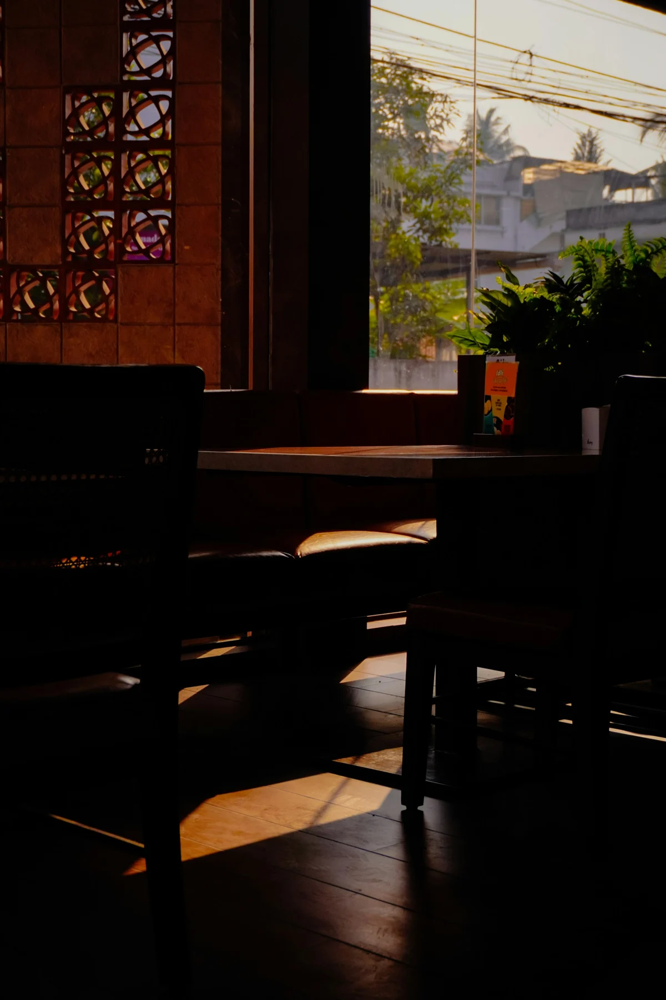
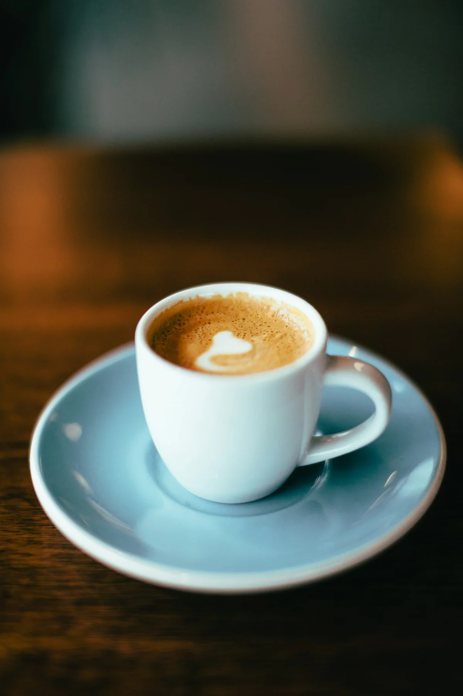

SOBA & COFFEE.店舗情報を見る
ABOUT THE CAFE
十割そばと、サイフォン。

PLAN YOUR VISIT
訪れる前に。
公開情報の確認日：2026年11月26日。住所・営業内容は掲載時点の情報で、変更される場合があります。

ABOUT THE CAFE

PLAN YOUR VISIT
公開情報の確認日：2026年11月26日。住所・営業内容は掲載時点の情報で、変更される場合があります。